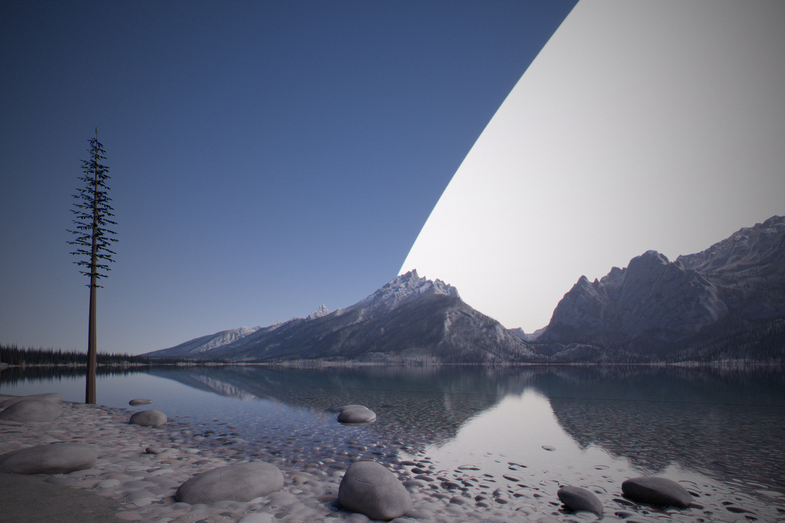

Earth inside the swarm
Every watt the sails catch leaves them again as heat, and Earth absorbs its share. Most of the sphere’s design follows from keeping that share small. What Earth is left with is its full sunlight, a changed night sky, and a dial for its climate.
In short
- Earth keeps its sunlight throughout. Sails crossing the line between the Sun and Earth turn edge-on as they pass, and once the sphere is closed Earth looks out through its own window.
- The heat peaks when the sphere is half built, at 8.6 W per square metre, about twice what doubling the air’s CO₂ would add. Letting 3.6% less sunlight through the window cancels it, at a cost of about 6% of the world’s rain. Once closed, the heat falls to 0.56 W per square metre.
- The night sky brightens, then goes black. At half built, the sky round the Sun glows at night as brightly as a lit street. Once closed, the sky within 75–85° of the Sun is black: no stars, no planets.
- The solar wind stops, and with it most auroras and magnetic storms.
- Light can then be placed where it is wanted, by mirrors in Earth orbit and by lasers, and so can rain. Temperature follows light closely; rain is harder to steer, but the swarm can make it.
What Earth sees
Everything about Earth’s heat and Earth’s night sky follows from one question: when someone on Earth looks toward the Sun’s side of the sky, what does their line of sight meet?
That picture explains the rest of this note. Through the gaps between the mirrors, Earth sees the far side’s sunlit fronts: they glow at night, and they send Earth a little heat. The mirrors themselves show Earth only their cold backs. Once the sphere is closed, every line within 78° ends on a mirror’s cold back, and that part of the sky goes black.
The heat Earth gets
The sphere is designed so that Earth sees as little warm surface as possible. The part of the sphere in front of Earth is mirrors from the very start, so Earth never sees a computing sail’s hot back. Through the gaps between the mirrors, Earth sees the far side’s fronts, which face both the Sun and Earth; while the sphere is open, those fronts are switched to radiate poorly in the infrared, pushing their heat out of their backs instead. And the mirrors’ insulated backs let through very little.
What is left grows as the sphere fills and then shrinks again. At first there is little to see. At half built, Earth sees plenty of far-side fronts through plenty of gaps, and the heat peaks. As the sphere closes, the gaps vanish, and only the mirrors’ backs remain.
earthForcing). Hover for the sunlight taken to cancel it and the rain lost.For comparison, if the sphere were made of identical computing sails all round, Earth would see the hot backs of those between it and the Sun, and would receive over 500 W per square metre once closed, more than twice the sunlight it absorbs. Designing for Earth is not optional.
The formula
Averaged over Earth, with coverage f and sail temperature T:
H(f) = 0.56 f + 0.226 · f (1 − f) · 0.1 σT⁴ W/m²
The first term is the mirrors’ backs. The second is the far side seen through the near side’s gaps: fronts covering a share f, gaps letting through (1 − f), fronts radiating at an emissivity of 0.1, and 0.226 for how much of Earth’s sky the far side fills, averaged over the globe.
Cancelling it, and what that costs
The heat is cancelled by letting slightly less sunlight through Earth’s window. Each W per square metre of extra heat is offset by about 0.42% less sunlight. At half built that is 3.6%; once closed, a quarter of a per cent. Earth’s average temperature stays where it is.
But swapping sunlight for infrared heat is not neutral. Sunlight warms the ground and the sea and drives evaporation; infrared absorbed by the air mostly does not. Climate models that make swaps like this find that world rainfall falls by about 0.76% for each W per square metre swapped. The pattern shifts too: dimming sunlight evenly cools the tropics more than the poles.
| Stage | Year | Heat | Sunlight cut | Rainfall |
|---|---|---|---|---|
| 1% | 2141 | 0.28 W/m² | 0.12% | −0.2% |
| 10% | 2149 | 2.6 W/m² | 1.1% | −2.0% |
| Half | 2178 | 8.6 W/m² | 3.6% | −6.3% |
| 99% | 2342 | 0.94 W/m² | 0.40% | −0.7% |
| Closed | 2361 | 0.56 W/m² | 0.24% | −0.42% |
The lost rain in the middle of the build is the largest cost the sphere imposes on Earth, and it lasts a century or more. It can be repaid directly, because the swarm can make rain (below).
The earlier, open designs
The page’s earlier design was an open swarm catching 83% of the Sun, with a gap round Earth’s line of sight. Earth absorbed 47 W per square metre, cancelled by a shade blocking a fifth of its sunlight, at a cost of about 30% of the world’s rain. Before that, a gentler design held Earth to 1 W per square metre and the swarm to 3.8% of the Sun. The closed sphere is better for Earth than either.
By day
By day nothing changes that anyone would notice. No sail ever passes in front of the Sun as seen from Earth, because sails turn edge-on as they cross the line, so there are no shadows and no flicker. The slight dimming of the window, at most 3.6%, is less than a thin high cloud. Once the sphere is closed, Earth sees the Sun through a window too large for its edges to be seen.
The night sky
At night, looking toward the Sun’s side of the sky, Earth sees through the mirrors’ gaps to the far side of the shell, where every sail is in full sunlight. The sails are nearly black, reflecting about 0.4% of the light, but there are a great many of them. The glow is brightest when half the sphere is built, because then there are many lit sails to see and many gaps to see them through. At 1% and at 99% it is the same, faint: few sails in one case, few gaps in the other.
skyLux), which adds up the glowing sky through the air. Hover for the glow’s own brightness.Behind the glow, the stars fade. A line of sight toward the Sun’s side crosses the sphere twice, once through the mirrors and once through the far side, and each crossing lets through only the gaps. So starlight falls to about half at a quarter built, a quarter at half, and one part in ten thousand at 99%. The faint glow of dust between the planets, and the planets themselves, fade too, because less sunlight escapes to light them.


Once closed
Once the sphere is closed, every line of sight within 78° of the Sun ends on a mirror’s cold back, which reflects nothing. That part of the sky is black. Its edge moves through the year, because Earth’s orbit is slightly oval: 75° from the Sun in July, when Earth is farthest out, and 85° in January, when Earth passes just outside the sphere.
What that looks like depends on where and when one looks. On a summer evening at mid-northern latitudes, the black reaches more than halfway up the western sky at the end of twilight. At midnight in June it still stands high in the north; in December it is low; near the equator in spring and autumn it has set by midnight. Elsewhere the stars and the Milky Way are as they are today, a shade darker, because the faint glow of sunlit dust is gone. The planets go out too: Mercury and Venus are inside the sphere, and the outer planets receive only its infrared. The Moon shines only while its own window is open.


The solar wind stops
The Sun blows a thin wind of charged particles outward at hundreds of kilometres a second. The shell absorbs it everywhere except the windows, and even the stream through Earth’s window spreads out before it arrives, to about 0.3% of today’s. Magnetic storms and most auroras end.
The solar wind also blows a bubble round the solar system that keeps out part of the cosmic rays from the rest of the galaxy. Without the wind the bubble collapses, and cosmic rays reach Earth at the strength the Voyager probes measured outside it. Earth’s magnetic field and air still stop most of them. The change should matter most near the poles and on polar flights; the model has not worked it out.
The window as a climate dial
Closing the sphere turns Earth’s sunlight into something the swarm sets. Narrowing the window, or leaving some of its mirrors partly turned, dims all of Earth evenly. Tilting the mirrors round the window bends extra sunlight onto Earth; from 3 million km away their light spreads over about twice Earth’s width, so this brightens the whole planet but cannot aim at a region. The window simulation in Closing the sphere shows both. A quarter of a per cent of sunlight is worth about 0.56 W per square metre; about one per cent would cancel all the warming humanity has caused so far.
Placing light region by region
The energy needed to change a region’s climate is trivial next to the swarm. Adding 50 W per square metre of daylight over a million square kilometres takes 5×10¹³ W, about a ten-trillionth of what the swarm catches. What limits regional control is how sharply light can be aimed, and how the atmosphere responds.
How sharply sunlight can be aimed
The Sun is not a point. It is half a degree wide, and no mirror or lens can concentrate its light into a spot narrower than its distance times that angle. That is a basic law of optics, the same one that says a magnifying glass cannot make a spot hotter than the Sun’s surface.
So placing light on regions needs mirrors in orbit round Earth, fed through a window widened to cover their orbits, and turned edge-on when they are not over their target. About 10¹⁰ kg of them would do for the example above. A first experimental orbital mirror of this kind, 18 m across, was approved for launch in July 2026. Lasers do better still: laser light is not limited by the Sun’s width, so a station among the mirrors could light a single field from 3 million km away, at any hour.
What the atmosphere allows
Temperature: yes, locally. A region’s temperature follows the energy it receives. With tens of watts per square metre, a winter can be made several degrees milder or a summer cooler, down to the scale of a valley. Snow is the catch: it reflects most of the added light, so warming a snowy winter first means melting the snow.
Summer rain can be taken away. Shading land in summer weakens the heating that drives thunderstorms and draws in moist air from the sea. That dries summers, which is the Mediterranean pattern, but it is also how the American Midwest, the North China Plain and India get the rain their farms depend on.
Winter rain can barely be moved. It needs an ocean upwind and a storm track overhead, and storm tracks are set by the whole planet’s circulation. Changing how much sunlight falls at each latitude through the year can shift them by a few degrees, but cannot bring ocean storms to a continent’s interior. And water is conserved: rain moved to one place is taken from another.
Making rain
Unless more water is evaporated in the first place, and the swarm can do that.
Weather cannot be forecast beyond about two weeks, because small differences grow. The same sensitivity means that small, well-timed nudges can steer it, if it is watched closely enough and the nudges can be placed quickly; the mathematics of steering such systems is well understood. Nobody has steered weather this way. Physics allows it; climate models have not tested it.
Can more of the world be made Mediterranean?
A Mediterranean climate needs mild winters, dry summers under a high-pressure zone, and wet winters when the storm track swings toward the equator. Today it is found on west coasts between 30° and 45° from the equator. On west coasts a little farther from the equator, in France and Britain, the Pacific Northwest, southern Chile and New Zealand, shading by season could plausibly push the dry-summer belt a few degrees poleward. Its other edge would then dry toward steppe, so the belt would move rather than grow, unless that edge were compensated. In continental interiors the temperatures could be made Mediterranean and the summers dried, but the winter rain would have to be piped in: desalinating and pumping half a metre of water a year onto ten million square kilometres takes a few terawatts, which is easy for the swarm.


No climate model has yet run shading aimed at single countries. The studies that exist work by latitude: one found that two shades near the point between Earth and the Sun could keep 40% of the surface within 0.1 °C of its original climate, against under 10% for a single shade; another that shading by latitude and season cut the worst-hit region’s changes by about 30%. Regional results depend on how the winds respond, which simple models fix in place and detailed models disagree on. And whoever steers the mirrors holds every country’s weather. One region’s new Mediterranean summer may be another’s lost monsoon.
Light for habitats
Habitats in space, such as O’Neill cylinders, can be lit the same way as Earth. Near Earth’s orbit each can have its own window, about 70,000 km across. Farther out that stops working, because the window has to grow with the distance between the habitat and the sphere: at Mars it would be over half a million kilometres across, and at Jupiter more than a million. A million habitats at Jupiter’s distance would need more window than the sphere has sky.
So the swarm sends distant habitats power instead. A laser beam does not spread with the Sun’s half-degree width: a transmitter 10 km across lands a beam about 150 m wide at Jupiter’s distance. Each habitat turns the beam back into daylight with lamps of whatever colour its people and crops want, and sets its own days and seasons. A large cylinder, 8 km across and 32 km long, needs about 10¹¹ W of daylight; a million of them, after all the losses of conversion, a few billionths of the Sun.
Open questions
- A full climate-model study of heat added from the sunward sky while sunlight is removed by day, peaking for a century, and of regional shading on top.
- Cosmic rays without the solar wind: the dose at the ground and at flight altitudes, by latitude.
- Switchable infrared fronts at this scale, and how they age.
- Who decides the climate, once it can be set.
Sources and code
- Project notes:
docs/closed-swarm.md,docs/full-swarm.md,docs/earth.md; studiesdocs/data/earth_safe.json,earth_safe_skeptic.json. - Model:
src/model/hybrid.js(earthForcing,skyLux,FIXED); rendersrender/sky_map.py; diagrams innotes/figures.js. - Kravitz et al. (2011), the Geoengineering Model Intercomparison Project; Tilmes et al. (2013), its hydrological response.
- Sánchez and McInnes (2015), optimal sunshade configurations near the Sun–Earth L1 point, PLOS ONE.
- MacMartin, Keith, Kravitz and Caldeira (2013), non-uniform solar geoengineering, Nature Climate Change 3.
- Tilmes et al. (2018), the Geoengineering Large Ensemble (GLENS).
- Ott, Grebogi and Yorke (1990), “Controlling chaos”, Physical Review Letters 64.
- Sky & Telescope (2026), Reflect Orbital’s mirrors approved for launch.
- O’Neill (1974), “The colonization of space”, Physics Today 27.